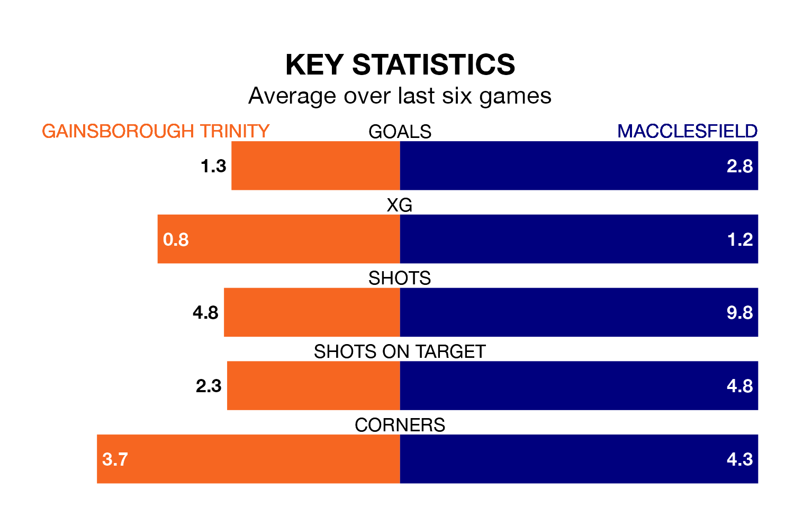

Macclesfield are strong favourites to take all three points despite Gainsborough Trinity's home advantage in Saturday's match at the Northolme.
*Betting Company* are offering odds of 1.95 on Macclesfield sealing the win, with the visitors sitting sixth in Northern Premier League table.
Gainsborough Trinity, who are 17th in the league and 11 points behind Macclesfield, are priced at 3.15 to win. A draw is set at 3.9.
With 42 goals in 20 games so far this season, Macclesfield are the league's joint-third-highest scorers with 2.1 goals per game. And they are conceding fewer than average, letting in 23 goals at a rate of 1.1 per game.
Gainsborough Trinity, meanwhile, are below average scorers, with 1.4 goals per game, compared to a league average of 1.7. They have conceded 1.9 goals per game.
The Blues are in bad form in Northern Premier League, with one win and a draw from their last six games.
With three wins and two draws over that period, the away side's form is much better – they have taken 11 points from 18, compared to the hosts' four.
Gainsborough Trinity's last match was on December 16, a 3-1 loss against Marine.
Macclesfield drew 0-0 with Workington last time out, on Tuesday.
Updated: 15:16, 21/12/23